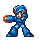
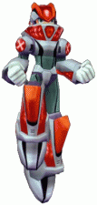
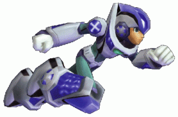

Armors have always been a part of Megaman X games, ever since the beginning. MMX8's armor system is a bit different than previous games, as he now has the ability to mix and match parts from 2 different sets of armor, as well as using the full armor on it's own. This guide goes in depth to explain all of the functions that each part of armor does.
Part Locations
Before I go off into explaining the functions of the different parts, I will list the various locations of all of the Armor parts.
| Part |
Location |
| Icarus Head |
Gravity Antonion's stage. After the mini-game, there is an extra green portal. Use Axl's Runnerbomb transformation to help avoid the myriad of spikes. |
| Icarus Body |
Earthrock Trilobyte's stage. After forcing the robot to make a retreat, you will find a small alcove on the lower path. Use Burn Rooster's weapon to destroy the tanks. |
| Icarus Buster |
After beating one maverick, return to Noah's Park. The capsule will be in a doorway that was previously locked. |
| Icarus Foot |
Bamboo Pandemonium's stage. You need the ride armor, as it's on a very high ledge, found right after one of the miniboss rooms. Dash over to the part with the Armor and leap out at the last second. |
| Hermes Head |
At the end of Yeti's stage. Use Sunflower's weapon to break the ice. |
| Hermes Body |
Dark Mantis' stage. Can be found by climbing one of the dark, vertical shafts. |
| Hermes Buster |
Optic Sunflower's stage. Can be found after one of the trials. To the left there will be a platform with some blocks barricading your way to the part. Use the Squeeze Bomb to destroy them. |
| Hermes Foot |
Can be found after climbng a spike-lined shaft in Burn Rooster's stage. |
Icarus Armor

The Icarus Armor is geared towards pure offense, and you can do quite a bit of damage with this armor when used correctly.
Head Part
The Head Part of the Icarus Armor creates a blue field around X whenever he jumps, allowing him to damage enemies with his ascent.
Body Part
The Body Part halves all of the damage that X takes, as well as removing any recoil whatsoever. All of the damage you take turns red as well, meaning that you recover all of it when you are switched out. X can almost become invincible with proper use of this part.
Buster Part
The Arm Part allows X to charge one less level than he normally would have to. What this means is that his normal shots become half-charged shots, and his half-charged shots become fully-charged ones. Fully charging the X-Buster causes X to fire a powerful laser shot. It should be noted that X is nailed in place while firing this thing, so use it with caution! Also, X is allowed to charge his special weapons as well with this upgrade.
Foot Part
The Icarus Foot Parts simply allow X to jump higher. This allows X to clear things couldn't before, but you'll have to be careful as to how you use it, as does have a way of making dash-jumping a bit awkward.
Giga Crush
If you are using the Icarus Armor as a whole, then the Giga Crush will be available to you. The Giga Crush is a full-screen attack that does rather heavy damage; about as much as a double attack. Note that you can use it when the meter is not full, but the damage will be lessened. The meter recharges on it's own at a fairly slow pace.
Hermes Armor

The Hermes Armor is more geared towards speed than offense. It is very nimble, and is generally a rather nice tool to have when taking it the bosses.
Head Part
This boosts the speed of X's charging. This pretty much allows you to fire charged shots like it's nobody's business; particularly hand when you need to guard break something fast.
Body Part
This part makes X invincible to weak enemy attacks. Note that X does in fact recoil from hits even if they are shrugged off, but it's not much of a problem either way. Also, any red damage that X has will not be depleted with this part equipped, so you don't have to be in a hurry to switch out if/when you get hit.
Buster Part
The Arm Part changes X's charged shot into a 3-way shot, allowing you to hit things from an angle. This is pretty useful, as it allows X to attack from normally inconvenient angles. I will note that this charged shot is in fact weaker than the normal one, so you may be better off rapid-firing the bosses. You can also charge special weapons while this part is equipped.
Foot Part
The Hermes Armor's foot part speeds up X's movement, which is pretty nice. The main attraction of this part is the ability to Shadow-Dash, which makes invincible during his dash. This gives X some nice tricks to use on bosses, and generally helps you in not getting hit. Note that you cannot dash through larger enemies and bosses, but you can dash through and projectiles you wish.
X-Drive
Now this is where it gets interesting. When you are using all of the Hermes Parts, the X-Drive becomes available. The X-Drive increases all of the parameters of his parts, and he becomes a force to be reckoned with. The changes are as follows:
- Head Parts:X's charge speed becomes even faster with this, taking only a split second to charge. This gives X a rather dangerous offense, as he can fire off guard breaks at an extreme rate.
- Body Parts:Normally X could shrug off weaker attacks with the Hermes Body part. When the X-Drive is active, the definition of 'weak' attacks is expanded, and he can shrug off most attacks in the game, including collision damage with bosses! This can be a real Godsend during tough fights.
- Buster Parts:X's 3-way shot becomes a 5 way shot, offering X even more coverage. Because of the increased number of shots, enemies tend to take more damage due to them being struck multiple times.
- Foot Parts:X moves even faster with the X-Drive active! You can cover a lot of ground without even having to dash with this on.
- Also, I will note that the X-Drive is invincible on activation, which means you can use this to avoid attacks. This is particularly useful on certain attacks like Pandemonium's punch, which can shave off a lot of your health quickly.